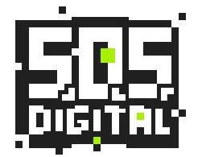

b0tlita
petite billingual andean
digital rights activist
in gendered digital violence
and databody selfdefense
working with
Fundación InternetBolivia.org
a group of citizens that defend digital human rights.

S.O.S. Digital
women who share digital selfdefense strategies in Bolivia.

made


Guide for cyberbrigadiers:
How to accompany women in the face of digital violences in Bolivia.
Guide to combat digital harassment and political violence:
Mujeres libres en política. Published by government and international organizations